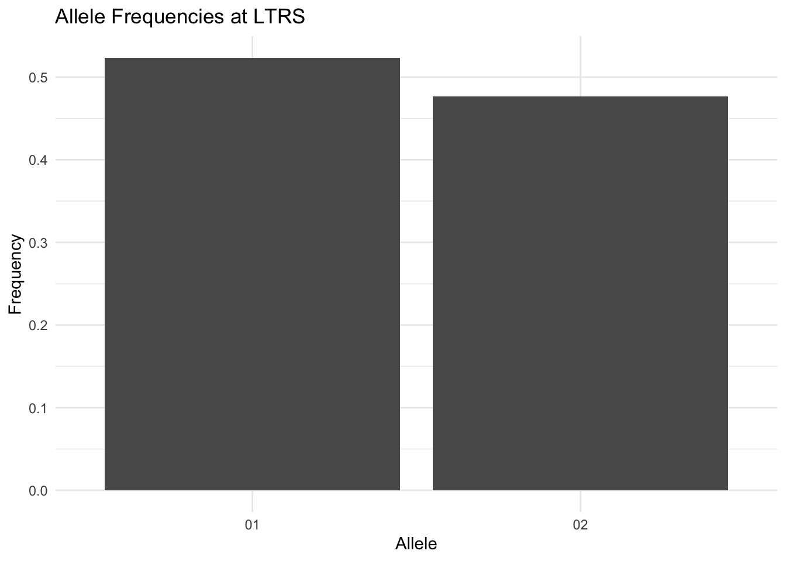
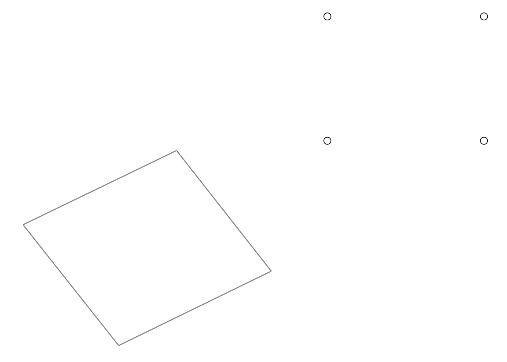

library(gstudio)
library(ggplot2)
data(arapat)9 Visualization
The gstudio package provides several ggplot2 layers and mapping tools for visualizing genetic data. This chapter covers allele frequency plots, population maps, population graph visualization, and interactive leaflet maps.
9.1 Allele Frequency Plots
9.1.1 geom_locus()
The geom_locus() function creates a bar chart of allele frequencies for a single locus. Map the locus to the x aesthetic:
ggplot() +
geom_locus(aes(x = LTRS), data = arapat) +
labs(title = "Allele Frequencies at LTRS") +
theme_minimal()
Partition by population using the fill aesthetic:
ggplot() +
geom_locus(aes(x = LTRS, fill = Species), data = arapat) +
labs(title = "LTRS Allele Frequencies by Species") +
theme_minimal()
9.1.2 geom_frequencies()
The geom_frequencies() function takes pre-computed frequency data (from frequencies()) and plots it. This gives you more control over faceting:
freqs <- frequencies(arapat, loci = "LTRS", stratum = "Species")
ggplot() +
geom_frequencies(freqs) +
facet_wrap(~Stratum) +
labs(title = "LTRS Frequencies by Species") +
theme_minimal() +
theme(legend.position = "none")
9.2 Spatial Sampling Maps
9.2.1 geom_strata()
The geom_strata() function plots sampling locations as points on a map. It expects Longitude and Latitude columns in the data:
ggplot() +
geom_strata(aes(x = Longitude, y = Latitude, fill = Species),
data = arapat) +
labs(title = "Araptus attenuatus Sampling Locations") +
theme_minimal()
9.2.2 geom_strata_label()
Add text labels to strata locations:
ggplot() +
geom_strata(aes(x = Longitude, y = Latitude), data = arapat) +
geom_strata_label(aes(x = Longitude, y = Latitude,
label = Species),
data = arapat) +
theme_minimal()9.3 Population Graph Visualization
9.3.1 geom_popgraph()
The geom_popgraph() function creates a complete population graph visualization (edges + nodes) in a single call:
a <- matrix(c(0, 1, 0, 1,
1, 0, 1, 0,
0, 1, 0, 1,
1, 0, 1, 0), nrow = 4)
rownames(a) <- colnames(a) <- LETTERS[1:4]
graph <- as.popgraph(a)
igraph::V(graph)$x <- c(1, 2, 1, 2)
igraph::V(graph)$y <- c(1, 1, 2, 2)
igraph::V(graph)$group <- c("X", "X", "Y", "Y")Basic graph:
ggplot() +
geom_popgraph(graph, aes(x = x, y = y)) +
theme_minimal()
Color nodes by group:
ggplot() +
geom_popgraph(graph, aes(x = x, y = y, fill = group)) +
theme_minimal()
9.3.1.1 Customizing Appearance
ggplot() +
geom_popgraph(graph, aes(x = x, y = y, fill = group),
node.size = 5,
edge.color = "darkgrey",
edge.width = 1) +
theme_void()
9.3.1.2 Auto Layout
If x and y are not specified, a force-directed layout is computed automatically:
ggplot() +
geom_popgraph(graph) +
theme_void()
9.3.2 geom_nodeset() and geom_edgeset()
For finer control, use the separate node and edge layers:
ggplot() +
geom_edgeset(graph, aes(x = x, y = y)) +
geom_nodeset(graph, aes(x = x, y = y, fill = group)) +
theme_void()9.3.3 Edge Labels
ggplot() +
geom_popgraph(graph, aes(x = x, y = y)) +
geom_edgelabels(graph, aes(x = x, y = y)) +
theme_void()9.4 Spatial Population Graphs
A common workflow is to decorate a population graph with coordinates and then overlay it on a map:
data(lopho)
data(baja)
lopho_dec <- decorate_graph(lopho, baja, stratum = "Population")This graph was created by an old(er) igraph version.
ℹ Call `igraph::upgrade_graph()` on it to use with the current igraph version.
For now we convert it on the fly...ggplot() +
geom_popgraph(lopho_dec,
aes(x = Longitude, y = Latitude),
node.size = 4) +
labs(title = "Lophocereus Population Graph",
x = "Longitude", y = "Latitude") +
theme_minimal()
9.5 Spider Plots
The spiderplot_data() function creates line segment data connecting each individual to its population centroid, useful for visualizing spatial dispersion:
spider <- spiderplot_data(arapat,
stratum = "Species",
longitude = "Longitude",
latitude = "Latitude")
ggplot() +
geom_segment(aes(x = Longitude, y = Latitude,
xend = cLongitude, yend = cLatitude,
color = Species),
data = spider, alpha = 0.3) +
geom_point(aes(x = Longitude, y = Latitude, color = Species),
data = arapat) +
theme_minimal()9.6 Interactive Leaflet Maps
The addAlleleFrequencies() function creates interactive leaflet maps with pie charts showing allele frequencies at each sampling location. This requires the leaflet and leaflet.minicharts packages:
library(leaflet)
library(leaflet.minicharts)
addAlleleFrequencies(arapat,
stratum = "Species",
locus = "LTRS",
longitude = "Longitude",
latitude = "Latitude")